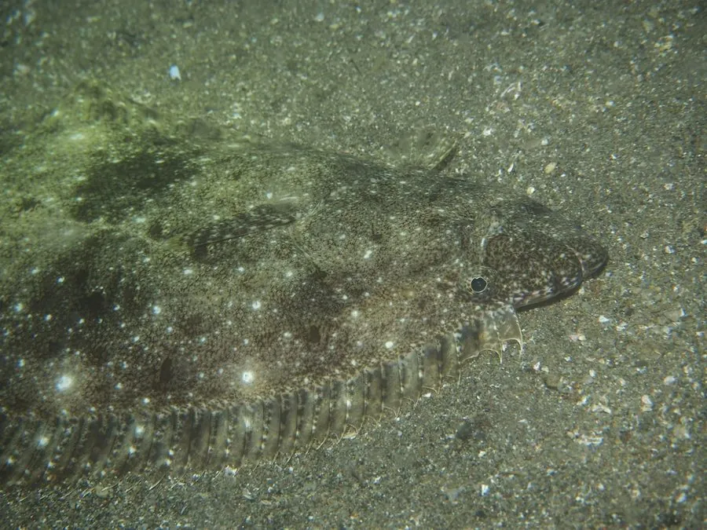

鱼类 · 动物界
牙鲆 Paralichthys olivaceus

两眼位于身体左侧的底栖比目鱼，有眼侧灰褐带黑斑，常埋在沙中伏击小鱼虾，是中国北方沿海重要的经济鱼类。
- 分类
- 门脊索动物门纲硬骨鱼纲目鲽形目科牙鲆科属牙鲆属
- 栖息环境
- 沙泥底质的浅海和河口附近，白天常埋在沙中
- 地理分布
- 中国黄渤海、东海，以及日本、朝鲜半岛沿岸
- 保护级别
- 暂无评估
物种志
牙鲆体呈长椭圆形，侧扁，两眼均位于头部的左侧，口大，下颌突出，口中具尖锐的牙齿。有眼侧呈灰褐至暗褐色，散布不规则的黑色斑点和斑块，无眼侧呈白色；背鳍和臀鳍基部有暗色斑纹。成鱼体长一般 40–70 cm，最大可达 1 m 以上。
牙鲆分布于中国黄渤海、东海以及日本、朝鲜半岛沿岸，是重要的底栖经济鱼类。它生活在沙泥底质的浅海和河口附近，白天多埋在沙中只露出眼睛，夜间出来捕食小鱼、虾类和头足类。牙鲆有短距离的季节性洄游，春季游向近岸产卵，秋季移向较深水域。由于过度捕捞和近岸污染，野生资源明显下降，目前市场上的牙鲆主要来自人工养殖。它肉质细嫩，是中国北方沿海常见的食用鱼。
形态与习性
- 食性捕食小鱼、虾类和头足类
- 体长一般 40–70 cm，最大可达 1 m 以上
- 眼位两眼均位于头部左侧
- 体色有眼侧灰褐带黑斑，无眼侧白色
- 习性白天埋在沙中，夜间出来捕食
- 资源野生资源下降，市场以养殖为主
趣味知识
- 牙鲆的两只眼睛都长在身体左侧，无眼侧贴着海底。
- 它白天把自己埋进沙里只露出眼睛，等小鱼虾靠近再突然出击。
- 中国北方市场上的牙鲆大多来自人工养殖，野生个体已不多见。